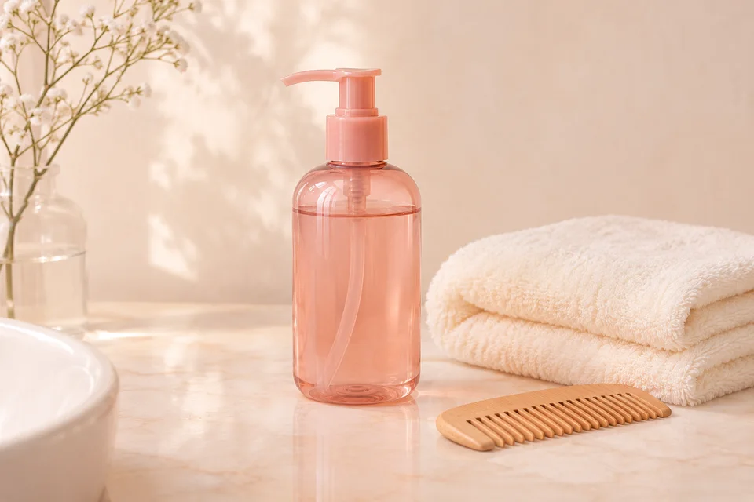

HAIR CARE
ラサーナのヘアエッセンス、「しっとり」と「さらさら」の選び方
選ぶ基準は欲しい仕上がり。どちらもタオルドライ後に使う、洗い流さないトリートメントです。
広告｜この記事にはアフィリエイトリンクが含まれます。

落ち着いた仕上がりなら「しっとり」
メーカーは、パサつきや広がりが気になる方や、しっとりまとまる質感が好みの方に「しっとり」を案内しています。髪が広がったときに、毛先まで落ち着いた見え方を優先するなら検討しやすいタイプです。
軽い仕上がりが好みなら「さらさら」
「さらさら」は、しっとりした質感よりもさらっとした仕上がりが好みの方向けです。迷ったら、普段使っているアウトバス製品で「重さが気になる」「もう少しまとまりが欲しい」のどちらが多いかを思い出してみてください。
使う順番はタオルドライのあと
公式の使用手順は、タオルで余分な水気を取り、適量を手のひらに広げ、毛先を中心になじませてからドライヤーで乾かす、という流れです。量は購入した製品の表示を目安にしてください。